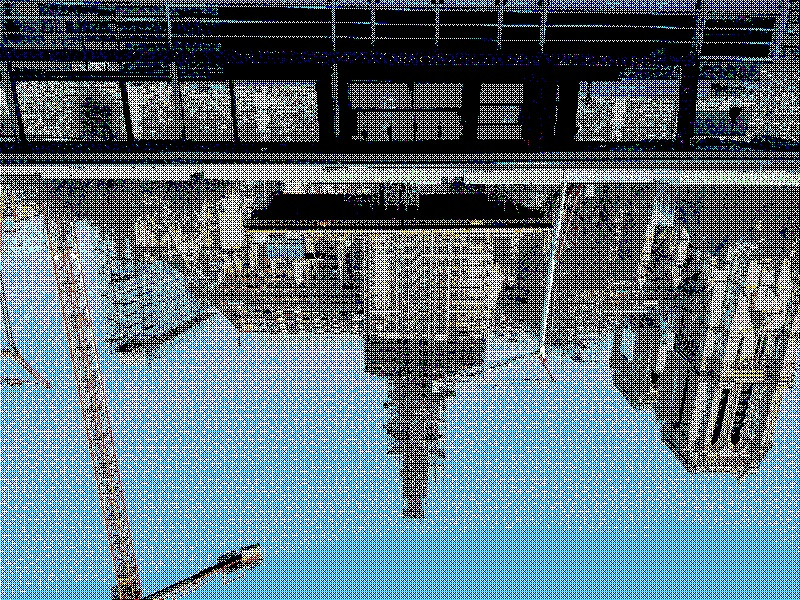
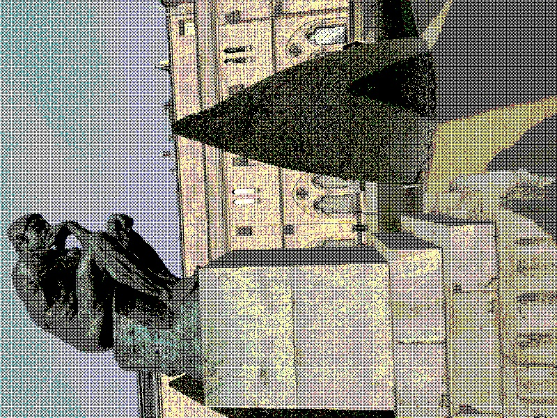
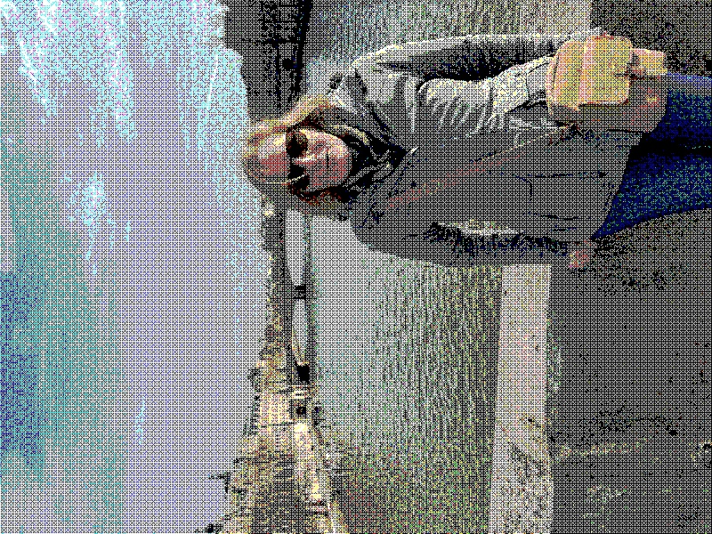
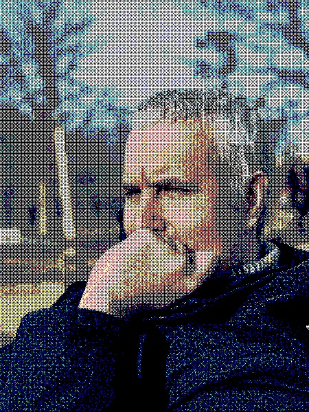
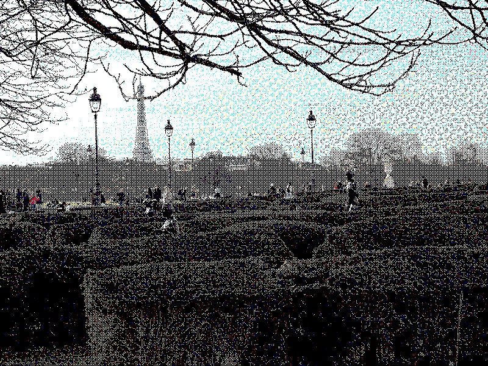
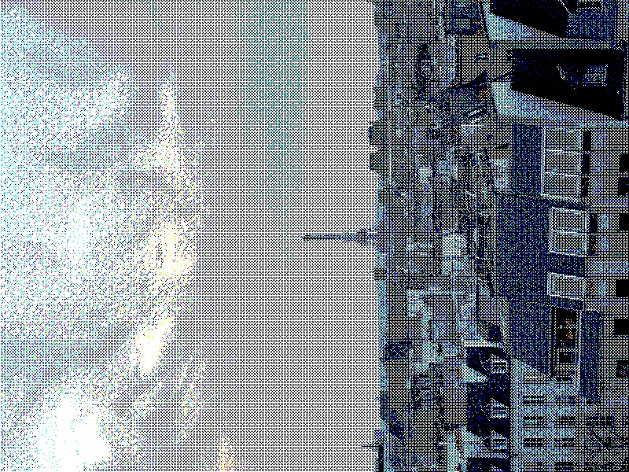

Posted on 2025-01-31 · 2 min read · Twenty Five · Imagemagick · Paris · Photos · Blogging · Software
While off sick and under the weather I decided to play around with presenting the photos on this blog in a fashion more in keeping with the current Hugo theme.
I used Imagemagick to process the same files from the Paris post earlier this week. I made them a bit smaller, reduced the number of colours to 256, posterized them (a built-in Imagemagick function that groups colours), and then did a dither on them.
magick input.jpg -resize 800x600 -colors 256 -posterize 4 -ordered-dither o8x8 output.jpg
The results below are probably a bit too low quality, but they are smaller. It was fun to experiment with them. I haven’t included all of the photos from the post earlier this week, just the ones that look more like computer game levels from the 1980s!
An evil wizard has trapped you in the reconstruction of a major cathedral!

Listen to the Thinker’s riddle to get a clue for the next level!

A glamorous lady greets you on a windy city bridge!

You meet the spy in the park to discuss the secrets you have uncovered!

Navigate the maze, but be sure to avoid the killer statues!

Summon the cloud wraith to the Eiffel Tower!

Something something how did I never see all that temporary fencing!
Only you can turn back time and rescue us from this eighties video game!
See Also
- Push the right key
- Fun With Chat-GPT
- In Praise of Paris
- Nineteen Out Of Nineteen?
- The Lost Guide to CIV VI